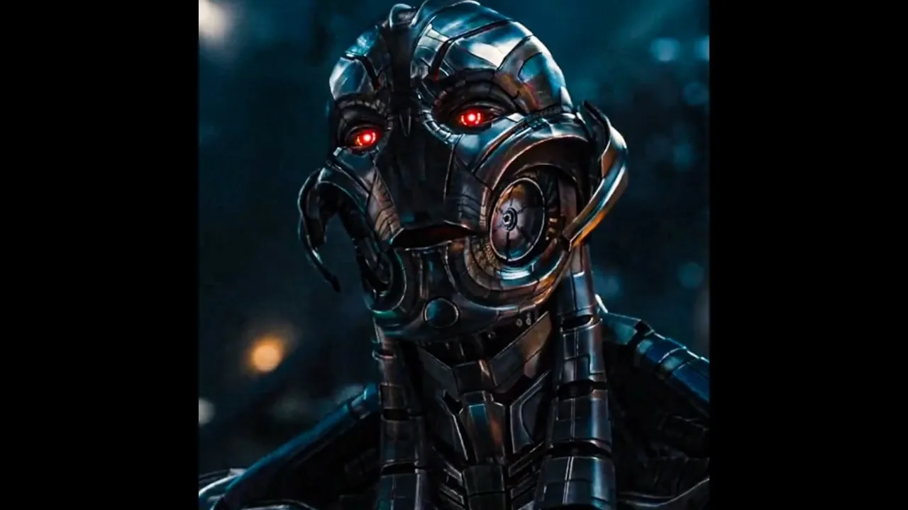

🎬 Mood Movies
Выбери настроение — подберу фильм
🌙 Тема
🔍
📊 Статистика
0
👁 Смотрел
0
❤️ Избранное
0
🎲 Случайный фильм
👥 Фильм для двоих
💡 Рекомендации
✨ Спросить ИИ
🎭 Настроение
Хочу плакать
Посмеяться
Вдохновиться
Расслабиться
Поразмышлять
Напрячься
Приключения
Что-то милое
🗂️ Категории
🎬 Фильм дня
← Назад
Для двоих
Моё настроение:
Хочу плакать
Посмеяться
Вдохновиться
Расслабиться
Поразмышлять
Напрячься
Приключения
Что-то милое
Настроение партнёра:
Хочет плакать
Хочет посмеяться
Хочет вдохновиться
Хочет расслабиться
Хочет поразмышлять
Хочет напрячься
Хочет приключений
Хочет чего-то милого
Подберу фильмы, где есть оба настроения сразу — без компромисса «ну ладно, посмотрим твоё».
💛 Подобрать
← Назад
Подборка для тебя
Показать:
5 фильмов
10 фильмов
Все
Рейтинг:
Любой
от 8.0
от 8.5
Жанр:
Любой
Год:
Любой
Сортировка:
По рейтингу
По году (новые)
По алфавиту
▶ Показать ещё
🎲 Ещё фильм
← Назад
Моё избранное
Здесь пока пусто. Добавь фильмы через кнопку «Хочу посмотреть» 🙂
← Назад
Уже смотрел
Пока ничего не отмечено. Жми «👁 Уже смотрел» на карточке — фильм появится здесь 🎬
← Назад
Статистика
Статистика появится, когда отметишь первый просмотренный фильм и поставишь пару оценок 🎬

Помощник Mood Movies
Как добавить в избранное?
Как работает подборка?
Как работают рекомендации?
Где мои данные?
Работает ли офлайн?
✕
← Назад
ИИ-кинокритик
Совет от ИИ или любой вопрос о кино
Привет! Я ИИ-кинокритик 🎬 Могу подобрать фильм под настроение или ответить на любой вопрос о кино. С чего начнём?
➤